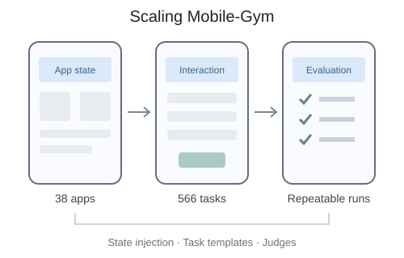

I am an undergraduate in Artificial Intelligence at
Beijing Jiaotong University,
where I work with Prof. Jitao Sang in the ADAM Lab. I previously
worked with Prof. Jia Li at the College of AI, Tsinghua University.
I am currently an Agent Development Intern at Meituan, working on
agent workflows, skill evolution, and knowledge management.
My research interests lie in LLM post-training, agentic
reinforcement learning, and GUI agents, with a broader
interest in long-horizon agents and
recursive self-improvement (RSI). My current work
focuses on building interactive environments for GUI agent training
and developing trajectory-level, process-aware evaluation methods.
I am particularly interested in how agents can reliably navigate
interfaces, coordinate tools, and recover from failures across
long-horizon tasks, and how they can use experience and feedback to
improve their strategies, workflows, and ultimately their own
improvement processes.
I expect to graduate in June 2028. Feel free to reach out if you are interested in these topics!
Awards
2026
Second Prize in the Meituan AI Hackathon, ranked 4th out of 541 teams (Team Leader).
2026
Second Prize in the University Mathematical Modeling Competition.
2025
National Encouragement Scholarship.
University
Merit Student and Second-Class Academic Scholarship.
Developed the GUIJudge method and core implementation for trajectory-level evaluation of GUI agents, including UI-TARS and GUI-Owl. GUIJudge achieved 97.12% detection recall across a benchmark of 61 apps and 508 preset defects.

Scaling Mobile-Gym
Xingxing Song · ADAM Lab, Beijing Jiaotong University
Research Project, June 2026–Present
Built interactive environments for GUI agent post-training. Added 10 simulated apps and 150 parameterized tasks, bringing the environment to 38 apps and 566 tasks. Worked on UI interactions, state modeling, declarative navigation, and reproducible task execution.
A personal agent with long-term memory, persistent execution, and scheduled follow-ups. Built around the Pi agent runtime and Temporal, it brings cloud-computer control and MobileGym phone interaction into one workspace, with visible execution, user confirmations, and human takeover.
Team Leader · Agent Architecture & Full-Stack Development
Meituan AI Hackathon, May–July 2026 Second Prize · 4th / 541 teams
Built an OpenClaw-based agent with dependency-aware task graphs and reusable skills for cross-app coordination. A clock-driven simulation models changing weather, queues, and orders so the agent can execute delayed tasks and revise its plans.
An agent-based campus dining simulation with a 3D voxel visualization. Explore queue congestion and compare service-window configurations using TypeScript, React, and Three.js.
Agent Development Intern · Intelligent Platform Group
Worked on requirement-clarification agents, skill self-evolution, and the Knowledge Flow plugin. Explored hierarchical indexing, Agentic RAG, and on-demand knowledge loading with trajectory analysis and regression evaluation.
May–Jul 2026
College of AI, Tsinghua University
Research Intern · Advisor: Prof. Jia Li
Studied agent harnesses and self-evolution for long-horizon reliability and failure recovery. Compared GEPA and Meta-Harness through partial reproductions and failure analysis on IMO-Bench and Terminal-Bench 2.0.
Dec 2025– Present
ADAM Lab, Beijing Jiaotong University
Undergraduate Researcher · Advisor: Prof. Jitao Sang
Research on GUI agent post-training environments and process-aware evaluation, including GUIJudge for GUITestScape and interactive environment construction for Scaling Mobile-Gym.
Education
Beijing Jiaotong University Undergraduate in Artificial Intelligence, School of Computer Science and Technology September 2024–June 2028 (expected)
Coursework: Machine Learning, Deep Learning, Reinforcement Learning, Data Structures and Algorithms, Linear Algebra, Calculus, Probability and Mathematical Statistics.